吉他组
把控和声伴奏，既可独奏也能烘托乐曲旋律。
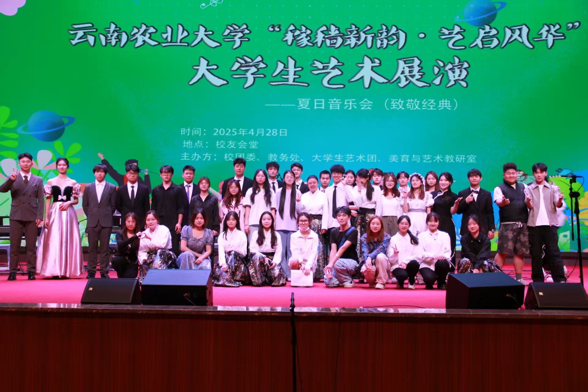

01 / 社团简介
本社团成立于云南农业大学艺术团，依托校园文艺建设需求组建，以“乐聚知音，以器传声”为宗旨，长期开展器乐排练、乐理教学、舞台展演等活动。乐队涵盖民乐、西洋乐器、流行器乐多个方向，面向零基础爱好者与有演奏基础的同学开放。近年来，社团围绕校园文艺活动持续推进队伍建设，参与迎新晚会、校园音乐节、各类文艺汇演，形成日常集训+舞台实践的特色培养模式。现有成员100余人，致力于搭建器乐交流平台，提升成员演奏水平与团队协作能力。
未来，器乐队将持续完善训练体系，常态化开展招新教学、合奏排练，打磨优质节目，积极参与校内外文艺演出，丰富校园文化生活，为热爱器乐的农大学子提供展示自我、追逐音乐梦想的舞台。
02 / 部门组成
吉他、架子鼓、钢琴、贝斯、小提琴，各司其职又交融和鸣。
把控和声伴奏，既可独奏也能烘托乐曲旋律。
掌控整体节拍律动，撑起整首歌曲节奏骨架。
填充和声铺垫旋律，丰富乐曲多层音色质感。
衔接鼓与旋律声部，筑牢乐曲低频和声根基。
演绎细腻主旋律，赋予曲目婉转抒情的音色。
03 / 精彩瞬间
每一次登台，都是热爱与器乐交汇的瞬间。
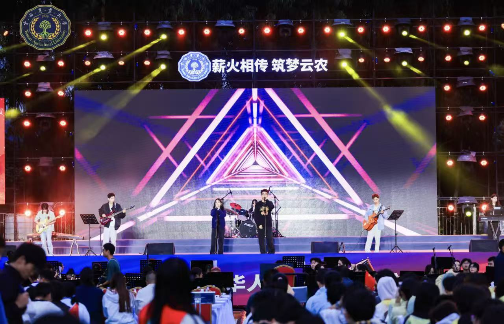
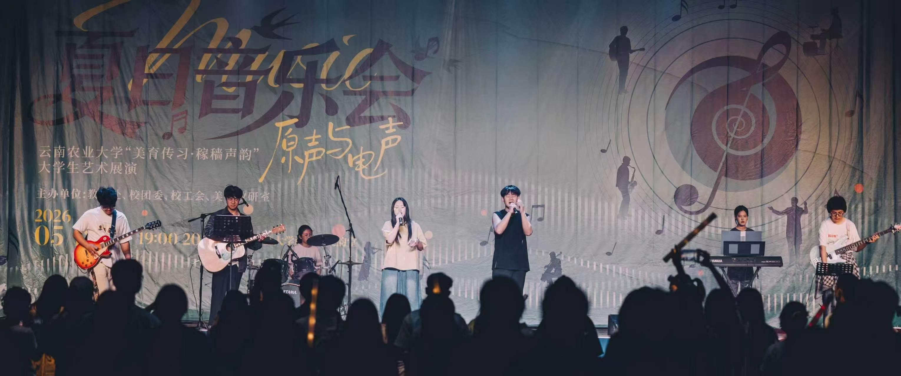
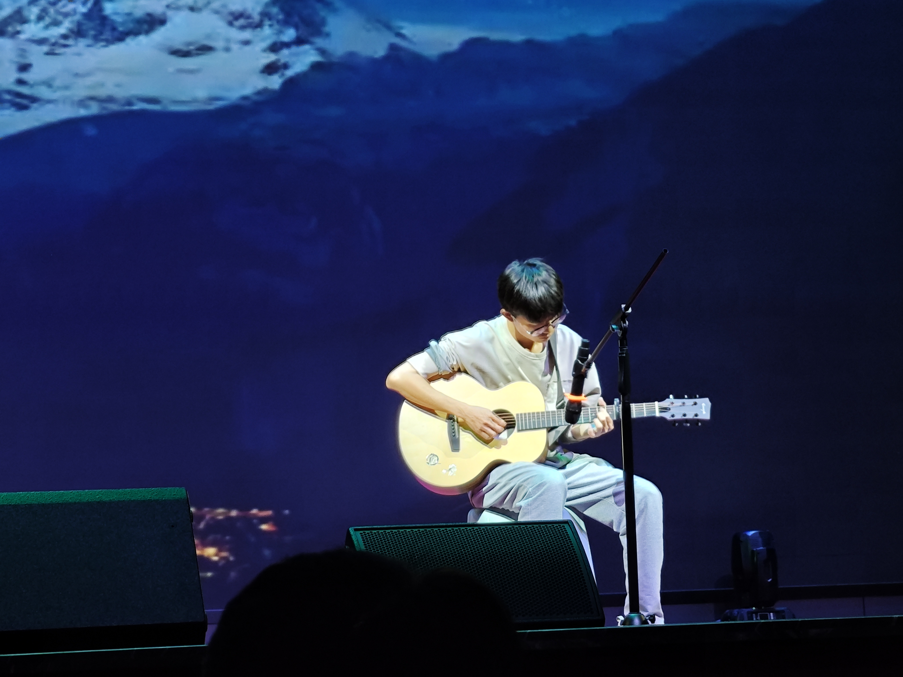
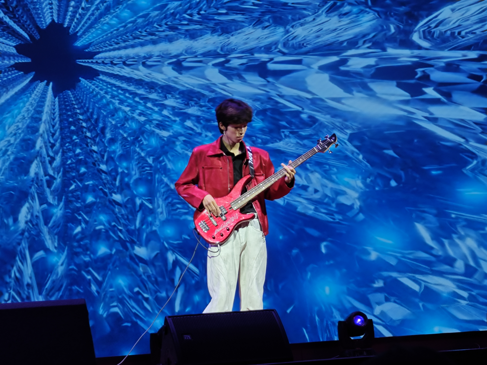
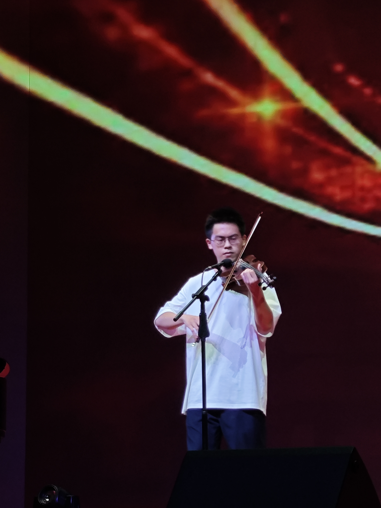
04 / 精彩活动
日常排练与舞台实践并存，用器乐连接校园与青春。
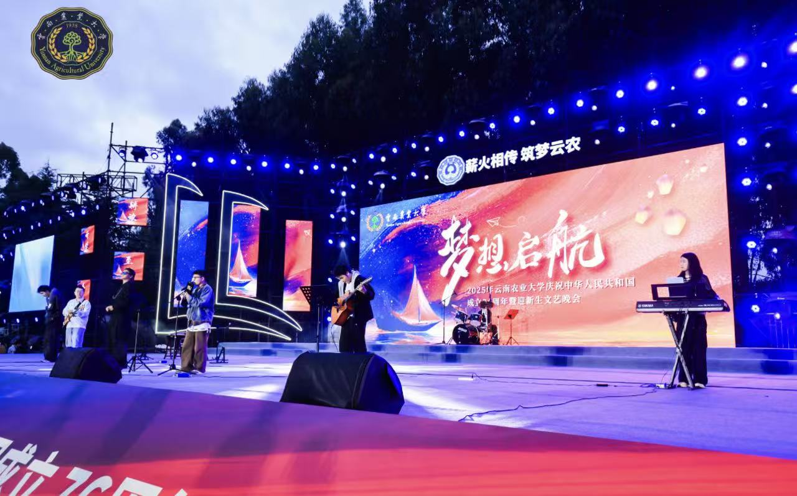
01
本次迎新晚会，器乐队集结吉他、贝斯、鼓、键盘、多类乐手，融合流行、摇滚曲目，以器乐合奏演绎青春旋律。用错落交织的音符迎接新生，展现乐队风采，为崭新校园生活奏响开场乐章。
查看新闻报道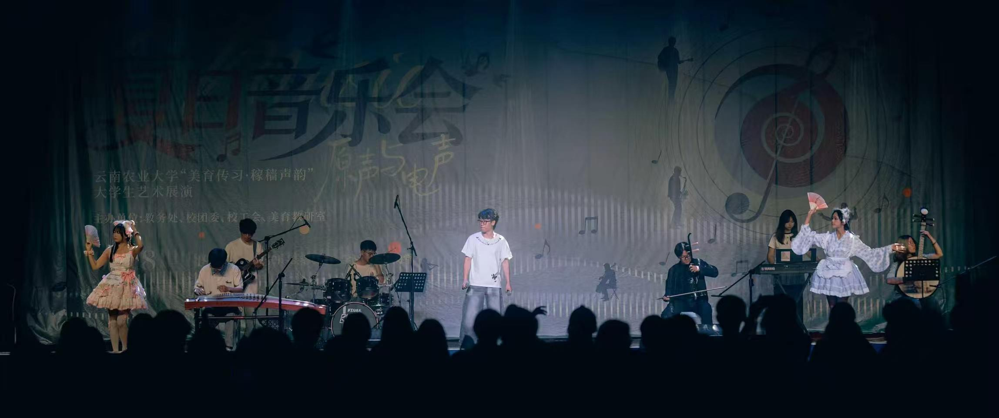
02
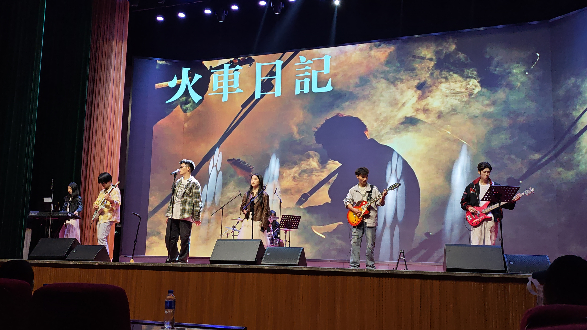
03
器乐队受邀参与各学院毕业晚会，以吉他、鼓、贝斯等器乐合奏经典曲目，用悠扬音符诉说离别情谊，送上真挚祝福，定格学子难忘的毕业瞬间。
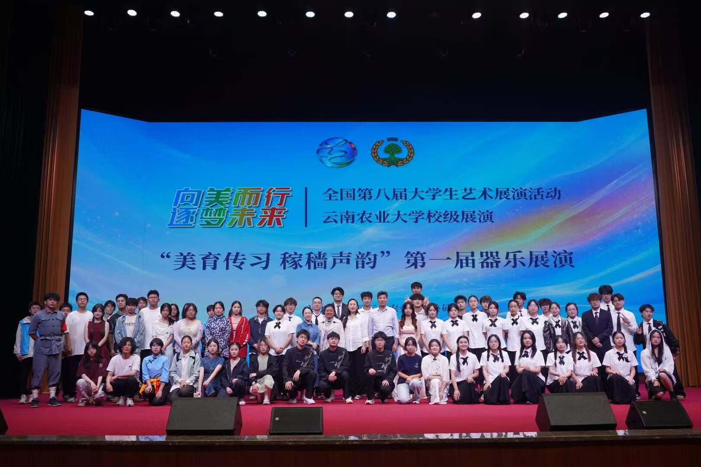
04
05 / 荣誉墙
每一次登台出征，都是热爱与坚持结出的果实。
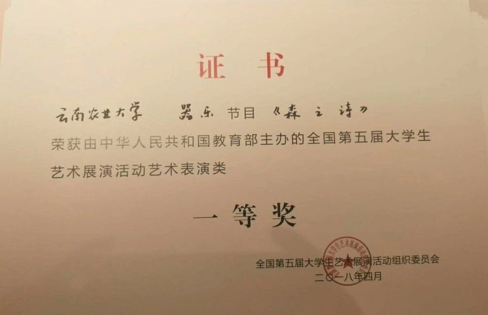
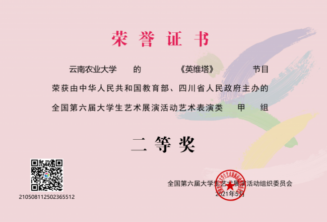
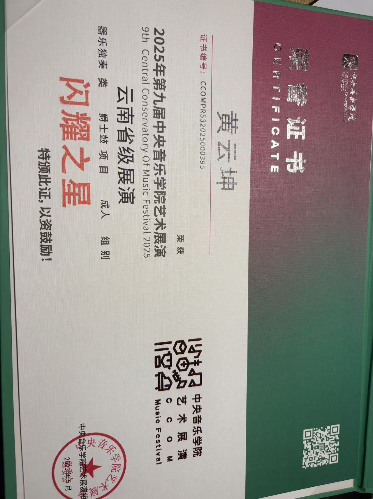